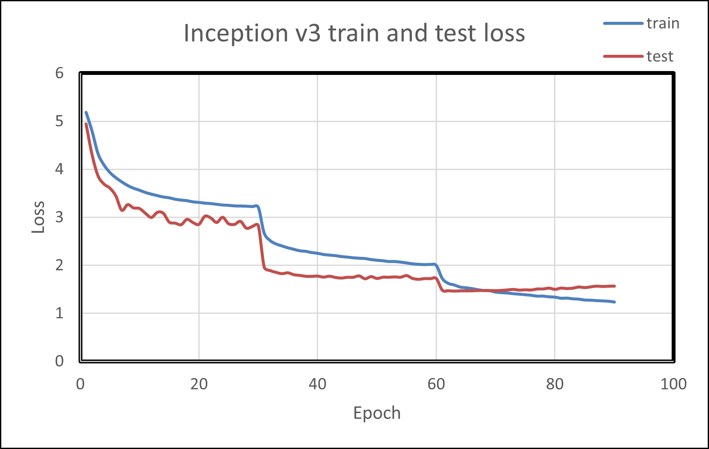
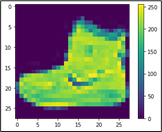
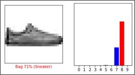
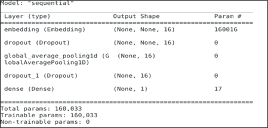
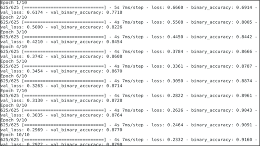
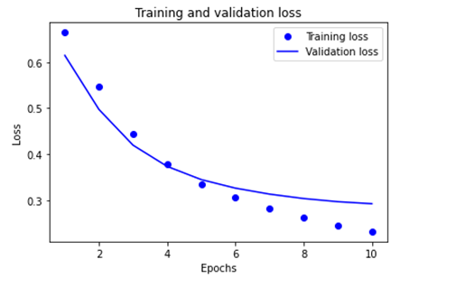

Deep learning: Inception V3 with PyTorch#
2024-08-08
42 min read time
Deep learning training#
Deep-learning models are designed to capture the complexity of the problem and the underlying data. These models are “deep,” comprising multiple component layers. Training is finding the best parameters for each model layer to achieve a well-defined objective.
The training data consists of input features in supervised learning, similar to what the learned model is expected to see during the evaluation or inference phase. The target output is also included, which serves to teach the model. A loss metric is defined as part of training that evaluates the model’s performance during the training process.
Training also includes the choice of an optimization algorithm that reduces the loss by adjusting the model’s parameters. Training is an iterative process where training data is fed in, usually split into different batches, with the entirety of the training data passed during one training epoch. Training usually is run for multiple epochs.
Training phases#
Training occurs in multiple phases for every batch of training data. the following table provides an explanation of the types of training phases.
Types of Phases |
|
|---|---|
Forward Pass |
The input features are fed into the model, whose parameters may be randomly initialized initially. Activations (outputs) of each layer are retained during this pass to help in the loss gradient computation during the backward pass. |
Loss Computation |
The output is compared against the target outputs, and the loss is computed. |
Backward Pass |
The loss is propagated backward, and the model’s error gradients are computed and stored for each trainable parameter. |
Optimization Pass |
The optimization algorithm updates the model parameters using the stored error gradients. |
Training is different from inference, particularly from the hardware perspective. The following table shows the contrast between training and inference.
Training |
Inference |
|---|---|
Training is measured in hours/days. |
The inference is measured in minutes. |
Training is generally run offline in a data center or cloud setting. |
The inference is made on edge devices. |
The memory requirements for training are higher than inference due to storing intermediate data, such as activations and error gradients. |
The memory requirements are lower for inference than training. |
Data for training is available on the disk before the training process and is generally significant. The training performance is measured by how fast the data batches can be processed. |
Inference data usually arrive stochastically, which may be batched to improve performance. Inference performance is generally measured in throughput speed to process the batch of data and the delay in responding to the input (latency). |
Different quantization data types are typically chosen between training (FP32, BF16) and inference (FP16, INT8). The computation hardware has different specializations from other data types, leading to improvement in performance if a faster datatype can be selected for the corresponding task.
Case studies#
The following sections contain case studies for the Inception V3 model.
Inception V3 with PyTorch#
Convolution Neural Networks are forms of artificial neural networks commonly used for image processing. One of the core layers of such a network is the convolutional layer, which convolves the input with a weight tensor and passes the result to the next layer. Inception V3[^inception_arch] is an architectural development over the ImageNet competition-winning entry, AlexNet, using more profound and broader networks while attempting to meet computational and memory budgets.
The implementation uses PyTorch as a framework. This case study utilizes TorchVision, a repository of popular datasets and model architectures, for obtaining the model. TorchVision also provides pre-trained weights as a starting point to develop new models or fine-tune the model for a new task.
Evaluating a pre-trained model#
The Inception V3 model introduces a simple image classification task with the pre-trained model. This does not involve training but utilizes an already pre-trained model from TorchVision.
This example is adapted from the PyTorch research hub page on Inception V3.
Follow these steps:
Run the PyTorch ROCm-based Docker image or refer to the section Installing PyTorch for setting up a PyTorch environment on ROCm.
docker run -it -v $HOME:/data --cap-add=SYS_PTRACE --security-opt seccomp=unconfined --device=/dev/kfd --device=/dev/dri --group-add video --ipc=host --shm-size 8G rocm/pytorch:latest
Run the Python shell and import packages and libraries for model creation.
import torch import torchvision
Set the model in evaluation mode. Evaluation mode directs PyTorch not to store intermediate data, which would have been used in training.
model = torch.hub.load('pytorch/vision:v0.10.0', 'inception_v3', pretrained=True) model.eval()
Download a sample image for inference.
import urllib url, filename = ("https://github.com/pytorch/hub/raw/master/images/dog.jpg", "dog.jpg") try: urllib.URLopener().retrieve(url, filename) except: urllib.request.urlretrieve(url, filename)
Import torchvision and PILImage support libraries.
from PIL import Image from torchvision import transforms input_image = Image.open(filename)
Apply preprocessing and normalization.
preprocess = transforms.Compose([ transforms.Resize(299), transforms.CenterCrop(299), transforms.ToTensor(), transforms.Normalize(mean=[0.485, 0.456, 0.406], std=[0.229, 0.224, 0.225]), ])
Use input tensors and unsqueeze them later.
input_tensor = preprocess(input_image) input_batch = input_tensor.unsqueeze(0) if torch.cuda.is_available(): input_batch = input_batch.to('cuda') model.to('cuda')
Find out probabilities.
with torch.no_grad(): output = model(input_batch) print(output[0]) probabilities = torch.nn.functional.softmax(output[0], dim=0) print(probabilities)
To understand the probabilities, download and examine the ImageNet labels.
wget https://raw.githubusercontent.com/pytorch/hub/master/imagenet_classes.txt
Read the categories and show the top categories for the image.
with open("imagenet_classes.txt", "r") as f: categories = [s.strip() for s in f.readlines()] top5_prob, top5_catid = torch.topk(probabilities, 5) for i in range(top5_prob.size(0)): print(categories[top5_catid[i]], top5_prob[i].item())
Training Inception V3#
The previous section focused on downloading and using the Inception V3 model for a simple image classification task. This section walks through training the model on a new dataset.
Follow these steps:
Run the PyTorch ROCm Docker image or refer to the section Installing PyTorch for setting up a PyTorch environment on ROCm.
docker pull rocm/pytorch:latest docker run -it --cap-add=SYS_PTRACE --security-opt seccomp=unconfined --device=/dev/kfd --device=/dev/dri --group-add video --ipc=host --shm-size 8G rocm/pytorch:latest
Download an ImageNet database. For this example, the
tiny-imagenet-200[^Stanford_deep_learning], a smaller ImageNet variant with 200 image classes and a training dataset with 100,000 images, was downsized to 64x64 color images.wget http://cs231n.stanford.edu/tiny-imagenet-200.zipProcess the database to set the validation directory to the format expected by PyTorch’s
DataLoader.Run the following script:
import io import glob import os from shutil import move from os.path import join from os import listdir, rmdir target_folder = './tiny-imagenet-200/val/' val_dict = {} with open('./tiny-imagenet-200/val/val_annotations.txt', 'r') as f: for line in f.readlines(): split_line = line.split('\t') val_dict[split_line[0]] = split_line[1] paths = glob.glob('./tiny-imagenet-200/val/images/*') for path in paths: file = path.split('/')[-1] folder = val_dict[file] if not os.path.exists(target_folder + str(folder)): os.mkdir(target_folder + str(folder)) os.mkdir(target_folder + str(folder) + '/images') for path in paths: file = path.split('/')[-1] folder = val_dict[file] dest = target_folder + str(folder) + '/images/' + str(file) move(path, dest) rmdir('./tiny-imagenet-200/val/images')
Open a Python shell.
Import dependencies, including Torch, OS, and TorchVision.
import torch import os import torchvision from torchvision import transforms from torchvision.transforms.functional import InterpolationMode
Set parameters to guide the training process.
Note
The device is set to
"cuda". In PyTorch,"cuda"is a generic keyword to denote a GPU.device = "cuda"
Set the data_path to the location of the training and validation data. In this case, the
tiny-imagenet-200is present as a subdirectory to the current directory.data_path = "tiny-imagenet-200"
The training image size is cropped for input into Inception V3.
train_crop_size = 299
To smooth the image, use bilinear interpolation, a resampling method that uses the distance weighted average of the four nearest pixel values to estimate a new pixel value.
interpolation = "bilinear"
The next parameters control the size to which the validation image is cropped and resized.
val_crop_size = 299 val_resize_size = 342
The pre-trained Inception V3 model is chosen to be downloaded from torchvision.
model_name = "inception_v3" pretrained = True
During each training step, a batch of images is processed to compute the loss gradient and perform the optimization. In the following setting, the size of the batch is determined.
batch_size = 32
This refers to the number of CPU threads the data loader uses to perform efficient multi-process data loading.
num_workers = 16
The
torch.optimpackage provides methods to adjust the learning rate as the training progresses. This example uses theStepLRscheduler, which decays the learning rate bylr_gammaat everylr_step_sizenumber of epochs.learning_rate = 0.1 momentum = 0.9 weight_decay = 1e-4 lr_step_size = 30 lr_gamma = 0.1
Note
One training epoch is when the neural network passes an entire dataset forward and backward.
epochs = 90
The train and validation directories are determined.
train_dir = os.path.join(data_path, "train") val_dir = os.path.join(data_path, "val")
Set up the training and testing data loaders.
interpolation = InterpolationMode(interpolation) TRAIN_TRANSFORM_IMG = transforms.Compose([ Normalizaing and standardardizing the image transforms.RandomResizedCrop(train_crop_size, interpolation=interpolation), transforms.PILToTensor(), transforms.ConvertImageDtype(torch.float), transforms.Normalize(mean=[0.485, 0.456, 0.406], std=[0.229, 0.224, 0.225] ) ]) dataset = torchvision.datasets.ImageFolder( train_dir, transform=TRAIN_TRANSFORM_IMG ) TEST_TRANSFORM_IMG = transforms.Compose([ transforms.Resize(val_resize_size, interpolation=interpolation), transforms.CenterCrop(val_crop_size), transforms.PILToTensor(), transforms.ConvertImageDtype(torch.float), transforms.Normalize(mean=[0.485, 0.456, 0.406], std=[0.229, 0.224, 0.225] ) ]) dataset_test = torchvision.datasets.ImageFolder( val_dir, transform=TEST_TRANSFORM_IMG ) print("Creating data loaders") train_sampler = torch.utils.data.RandomSampler(dataset) test_sampler = torch.utils.data.SequentialSampler(dataset_test) data_loader = torch.utils.data.DataLoader( dataset, batch_size=batch_size, sampler=train_sampler, num_workers=num_workers, pin_memory=True ) data_loader_test = torch.utils.data.DataLoader( dataset_test, batch_size=batch_size, sampler=test_sampler, num_workers=num_workers, pin_memory=True )
Note
Use torchvision to obtain the Inception V3 model. Use the pre-trained model weights to speed up training.
print("Creating model") print("Num classes = ", len(dataset.classes)) model = torchvision.models.__dict__[model_name](pretrained=pretrained)
Adapt Inception V3 for the current dataset.
tiny-imagenet-200contains only 200 classes, whereas Inception V3 is designed for 1,000-class output. The last layer of Inception V3 is replaced to match the output features required.model.fc = torch.nn.Linear(model.fc.in_features, len(dataset.classes)) model.aux_logits = False model.AuxLogits = None
Move the model to the GPU device.
model.to(device)
Set the loss criteria. For this example, Cross Entropy Loss[^cross_entropy] is used.
criterion = torch.nn.CrossEntropyLoss()
Set the optimizer to Stochastic Gradient Descent.
optimizer = torch.optim.SGD( model.parameters(), lr=learning_rate, momentum=momentum, weight_decay=weight_decay )
Set the learning rate scheduler.
lr_scheduler = torch.optim.lr_scheduler.StepLR(optimizer, step_size=lr_step_size, gamma=lr_gamma)
Iterate over epochs. Each epoch is a complete pass through the training data.
print("Start training") for epoch in range(epochs): model.train() epoch_loss = 0 len_dataset = 0
Iterate over steps. The data is processed in batches, and each step passes through a full batch.
for step, (image, target) in enumerate(data_loader):
Pass the image and target to the GPU device.
image, target = image.to(device), target.to(device)
The following is the core training logic:
a. The image is fed into the model.
b. The output is compared with the target in the training data to obtain the loss.
c. This loss is back propagated to all parameters that require optimization.
d. The optimizer updates the parameters based on the selected optimization algorithm.
output = model(image) loss = criterion(output, target) optimizer.zero_grad() loss.backward() optimizer.step()
The epoch loss is updated, and the step loss prints.
epoch_loss += output.shape[0] * loss.item() len_dataset += output.shape[0]; if step % 10 == 0: print('Epoch: ', epoch, '| step : %d' % step, '| train loss : %0.4f' % loss.item() ) epoch_loss = epoch_loss / len_dataset print('Epoch: ', epoch, '| train loss : %0.4f' % epoch_loss )
The learning rate is updated at the end of each epoch.
lr_scheduler.step()
After training for the epoch, the model evaluates against the validation dataset.
model.eval() with torch.inference_mode(): running_loss = 0 for step, (image, target) in enumerate(data_loader_test): image, target = image.to(device), target.to(device) output = model(image) loss = criterion(output, target) running_loss += loss.item() running_loss = running_loss / len(data_loader_test) print('Epoch: ', epoch, '| test loss : %0.4f' % running_loss )
Save the model for use in inferencing tasks.
# save model
torch.save(model.state_dict(), "trained_inception_v3.pt")
Plotting the train and test loss shows both metrics reducing over training epochs. This is demonstrated in the following image.

Custom model with CIFAR-10 on PyTorch#
The Canadian Institute for Advanced Research (CIFAR)-10 dataset is a subset of the Tiny Images dataset (which contains 80 million images of 32x32 collected from the Internet) and consists of 60,000 32x32 color images. The images are labeled with one of 10 mutually exclusive classes: airplane, motor car, bird, cat, deer, dog, frog, cruise ship, stallion, and truck (but not pickup truck). There are 6,000 images per class, with 5,000 training and 1,000 testing images per class. Let us prepare a custom model for classifying these images using the PyTorch framework and go step-by-step as illustrated below.
Follow these steps:
Import dependencies, including Torch, OS, and TorchVision.
import torch import torchvision import torchvision.transforms as transforms import matplotlib.pyplot as plot import numpy as np
The output of torchvision datasets is
PILImageimages of range [0, 1]. Transform them to Tensors of normalized range [-1, 1].transform = transforms.Compose( [transforms.ToTensor(), transforms.Normalize((0.5, 0.5, 0.5), (0.5, 0.5, 0.5))])
During each training step, a batch of images is processed to compute the loss gradient and perform the optimization. In the following setting, the size of the batch is determined.
batch_size = 4
Download the dataset train and test datasets as follows. Specify the batch size, shuffle the dataset once, and specify the number of workers to the number of CPU threads used by the data loader to perform efficient multi-process data loading.
train_set = torchvision.datasets.CIFAR10(root='./data', train=True, download=True, transform=transform) train_loader = torch.utils.data.DataLoader(train_set, batch_size=batch_size, shuffle=True, num_workers=2)
Follow the same procedure for the testing set.
test_set = TorchVision.datasets.CIFAR10(root='./data', train=False, download=True, transform=transform) test_loader = torch.utils.data.DataLoader(test_set, batch_size=batch_size, shuffle=False, num_workers=2) print ("teast set and test loader")
Specify the defined classes of images belonging to this dataset.
classes = ('Aeroplane', 'motorcar', 'bird', 'cat', 'deer', 'puppy', 'frog', 'stallion', 'cruise', 'truck') print("defined classes")
Denormalize the images and then iterate over them.
global image_number image_number = 0 def show_image(img): global image_number image_number = image_number + 1 img = img / 2 + 0.5 # de-normalizing input image npimg = img.numpy() plot.imshow(np.transpose(npimg, (1, 2, 0))) plot.savefig("fig{}.jpg".format(image_number)) print("fig{}.jpg".format(image_number)) plot.show() data_iter = iter(train_loader) images, labels = data_iter.next() show_image(torchvision.utils.make_grid(images)) print(' '.join('%5s' % classes[labels[j]] for j in range(batch_size))) print("image created and saved ")
Import the
torch.nnfor constructing neural networks andtorch.nn.functionalto use the convolution functions.import torch.nn as nn import torch.nn.functional as F
Define the CNN (Convolution Neural Networks) and relevant activation functions.
class Net(nn.Module): def __init__(self): super().__init__() self.conv1 = nn.Conv2d(3, 6, 5) self.pool = nn.MaxPool2d(2, 2) self.conv2 = nn.Conv2d(6, 16, 5) self.pool = nn.MaxPool2d(2, 2) self.conv3 = nn.Conv2d(3, 6, 5) self.fc2 = nn.Linear(120, 84) self.fc3 = nn.Linear(84, 10) def forward(self, x): x = self.pool(F.relu(self.conv1(x))) x = self.pool(F.relu(self.conv2(x))) x = torch.flatten(x, 1) # flatten all dimensions except batch x = F.relu(self.fc1(x)) x = F.relu(self.fc2(x)) x = self.fc3(x) return x net = Net() print("created Net() ")
Set the optimizer to Stochastic Gradient Descent.
import torch.optim as optim
Set the loss criteria. For this example, Cross Entropy Loss[^cross_entropy] is used.
criterion = nn.CrossEntropyLoss() optimizer = optim.SGD(net.parameters(), lr=0.001, momentum=0.9)
Iterate over epochs. Each epoch is a complete pass through the training data.
for epoch in range(2): # loop over the dataset multiple times running_loss = 0.0 for i, data in enumerate(train_loader, 0): # get the inputs; data is a list of [inputs, labels] inputs, labels = data # zero the parameter gradients optimizer.zero_grad() # forward + backward + optimize outputs = net(inputs) loss = criterion(outputs, labels) loss.backward() optimizer.step() # print statistics running_loss += loss.item() if i % 2000 == 1999: # print every 2000 mini-batches print('[%d, %5d] loss: %.3f' % (epoch + 1, i + 1, running_loss / 2000)) running_loss = 0.0 print('Finished Training')
PATH = './cifar_net.pth' torch.save(net.state_dict(), PATH) print("saved model to path :",PATH) net = Net() net.load_state_dict(torch.load(PATH)) print("loding back saved model") outputs = net(images) _, predicted = torch.max(outputs, 1) print('Predicted: ', ' '.join('%5s' % classes[predicted[j]] for j in range(4))) correct = 0 total = 0
As this is not training, calculating the gradients for outputs is not required.
# calculate outputs by running images through the network with torch.no_grad(): for data in test_loader: images, labels = data # calculate outputs by running images through the network outputs = net(images) # the class with the highest energy is what you can choose as prediction _, predicted = torch.max(outputs.data, 1) total += labels.size(0) correct += (predicted == labels).sum().item() print('Accuracy of the network on the 10000 test images: %d %%' % ( 100 * correct / total)) # prepare to count predictions for each class correct_pred = {classname: 0 for classname in classes} total_pred = {classname: 0 for classname in classes}
# again no gradients needed with torch.no_grad(): for data in test_loader: images, labels = data outputs = net(images) _, predictions = torch.max(outputs, 1) # collect the correct predictions for each class for label, prediction in zip(labels, predictions): if label == prediction: correct_pred[classes[label]] += 1 total_pred[classes[label]] += 1 # print accuracy for each class for classname, correct_count in correct_pred.items(): accuracy = 100 * float(correct_count) / total_pred[classname] print("Accuracy for class {:5s} is: {:.1f} %".format(classname,accuracy))
Case study: TensorFlow with Fashion-MNIST#
Fashion-MNIST is a dataset that contains 70,000 grayscale images in 10 categories.
Implement and train a neural network model using the TensorFlow framework to classify images of clothing, like sneakers and shirts.
The dataset has 60,000 images you will use to train the network and 10,000 to evaluate how accurately the network learned to classify images. The Fashion-MNIST dataset can be accessed via TensorFlow internal libraries.
Access the source code from the following repository:
To understand the code step by step, follow these steps:
Import libraries like TensorFlow, NumPy, and Matplotlib to train the neural network and calculate and plot graphs.
import tensorflow as tf import numpy as np import matplotlib.pyplot as plt
To verify that TensorFlow is installed, print the version of TensorFlow by using the below print statement:
print(tf._version__) r
Load the dataset from the available internal libraries to analyze and train a neural network upon the Fashion-MNIST dataset. Loading the dataset returns four NumPy arrays. The model uses the training set arrays, train_images and train_labels, to learn.
The model is tested against the test set, test_images, and test_labels arrays.
fashion_mnist = tf.keras.datasets.fashion_mnist (train_images, train_labels), (test_images, test_labels) = fashion_mnist.load_data()
Since you have 10 types of images in the dataset, assign labels from zero to nine. Each image is assigned one label. The images are 28x28 NumPy arrays, with pixel values ranging from zero to 255.
Each image is mapped to a single label. Since the class names are not included with the dataset, store them, and later use them when plotting the images:
class_names = ['T-shirt/top', 'Trouser', 'Pullover', 'Dress', 'Coat','Sandal', 'Shirt', 'Sneaker', 'Bag', 'Ankle boot']
Use this code to explore the dataset by knowing its dimensions:
train_images.shape
Use this code to print the size of this training set:
print(len(train_labels))
Use this code to print the labels of this training set:
print(train_labels)
Preprocess the data before training the network, and you can start inspecting the first image, as its pixels will fall in the range of zero to 255.
plt.figure() plt.imshow(train_images[0]) plt.colorbar() plt.grid(False) plt.show()

From the above picture, you can see that values are from zero to 255. Before training this on the neural network, you must bring them in the range of zero to one. Hence, divide the values by 255.
train_images = train_images / 255.0 test_images = test_images / 255.0
To ensure the data is in the correct format and ready to build and train the network, display the first 25 images from the training set and the class name below each image.
plt.figure(figsize=(10,10)) for i in range(25): plt.subplot(5,5,i+1) plt.xticks([]) plt.yticks([]) plt.grid(False) plt.imshow(train_images[i], cmap=plt.cm.binary) plt.xlabel(class_names[train_labels[i]]) plt.show()
The basic building block of a neural network is the layer. Layers extract representations from the data fed into them. Deep learning consists of chaining together simple layers. Most layers, such as
tf.keras.layers.Dense, have parameters that are learned during training.model = tf.keras.Sequential([ tf.keras.layers.Flatten(input_shape=(28, 28)), tf.keras.layers.Dense(128, activation='relu'), tf.keras.layers.Dense(10) ])
The first layer in this network
tf.keras.layers.Flattentransforms the format of the images from a two-dimensional array (of 28 x 28 pixels) to a one-dimensional array (of 28 * 28 = 784 pixels). Think of this layer as unstacking rows of pixels in the image and lining them up. This layer has no parameters to learn; it only reformats the data.After the pixels are flattened, the network consists of a sequence of two
tf.keras.layers.Denselayers. These are densely connected or fully connected neural layers. The first Dense layer has 128 nodes (or neurons). The second (and last) layer returns a logits array with a length of 10. Each node contains a score that indicates the current image belongs to one of the 10 classes.
You must add the Loss function, Metrics, and Optimizer at the time of model compilation.
model.compile(optimizer='adam', loss=tf.keras.losses.SparseCategoricalCrossentropy(from_logits=True), metrics=['accuracy'])
Loss function —This measures how accurate the model is during training when you are looking to minimize this function to “steer” the model in the right direction.
Optimizer —This is how the model is updated based on the data it sees and its loss function.
Metrics —This is used to monitor the training and testing steps.
The following example uses accuracy, the fraction of the correctly classified images.
To train the neural network model, follow these steps:
Feed the training data to the model. The training data is in the train_images and train_labels arrays in this example. The model learns to associate images and labels.
Ask the model to make predictions about a test set—in this example, the test_images array.
Verify that the predictions match the labels from the test_labels array.
To start training, call the model.fit method because it “fits” the model to the training data.
model.fit(train_images, train_labels, epochs=10)
Compare how the model will perform on the test dataset.
test_loss, test_acc = model.evaluate(test_images, test_labels, verbose=2) print('\nTest accuracy:', test_acc)
With the model trained, you can use it to make predictions about some images: the model’s linear outputs and logits. Attach a softmax layer to convert the logits to probabilities, making it easier to interpret.
probability_model = tf.keras.Sequential([model, tf.keras.layers.Softmax()]) predictions = probability_model.predict(test_images)
The model has predicted the label for each image in the testing set. Look at the first prediction:
predictions[0]
A prediction is an array of 10 numbers. They represent the model’s “confidence” that the image corresponds to each of the 10 different articles of clothing. You can see which label has the highest confidence value:
np.argmax(predictions[0])
Plot a graph to look at the complete set of 10 class predictions.
def plot_image(i, predictions_array, true_label, img): true_label, img = true_label[i], img[i] plt.grid(False) plt.xticks([]) plt.yticks([]) plt.imshow(img, cmap=plt.cm.binary) predicted_label = np.argmax(predictions_array) if predicted_label == true_label: color = 'blue' else: color = 'red' plt.xlabel("{} {:2.0f}% ({})".format(class_names[predicted_label], 100*np.max(predictions_array), class_names[true_label]), color=color) def plot_value_array(i, predictions_array, true_label): true_label = true_label[i] plt.grid(False) plt.xticks(range(10)) plt.yticks([]) thisplot = plt.bar(range(10), predictions_array, color="#777777") plt.ylim([0, 1]) predicted_label = np.argmax(predictions_array) thisplot[predicted_label].set_color('red') thisplot[true_label].set_color('blue')
With the model trained, you can use it to make predictions about some images. Review the 0th image predictions and the prediction array. Correct prediction labels are blue, and incorrect prediction labels are red. The number gives the percentage (out of 100) for the predicted label.
i = 0 plt.figure(figsize=(6,3)) plt.subplot(1,2,1) plot_image(i, predictions[i], test_labels, test_images) plt.subplot(1,2,2) plot_value_array(i, predictions[i], test_labels) plt.show()

i = 12 plt.figure(figsize=(6,3)) plt.subplot(1,2,1) plot_image(i, predictions[i], test_labels, test_images) plt.subplot(1,2,2) plot_value_array(i, predictions[i], test_labels) plt.show()

Use the trained model to predict a single image.
# Grab an image from the test dataset. img = test_images[1] print(img.shape)
tf.kerasmodels are optimized to make predictions on a batch, or collection, of examples at once. Accordingly, even though you are using a single image, you must add it to a list.# Add the image to a batch where it's the only member. img = (np.expand_dims(img,0)) print(img.shape)
Predict the correct label for this image.
predictions_single = probability_model.predict(img) print(predictions_single) plot_value_array(1, predictions_single[0], test_labels) _ = plt.xticks(range(10), class_names, rotation=45) plt.show()

tf.keras.Model.predictreturns a list of lists—one for each image in the batch of data. Grab the predictions for our (only) image in the batch.np.argmax(predictions_single[0])
Case study: TensorFlow with text classification#
This procedure demonstrates text classification starting from plain text files stored on disk. You will train a binary classifier to perform sentiment analysis on an IMDB dataset. At the end of the notebook, there is an exercise for you to try in which you will train a multi-class classifier to predict the tag for a programming question on Stack Overflow.
Follow these steps:
Import the necessary libraries.
import matplotlib.pyplot as plt import os import re import shutil import string import tensorflow as tf from tensorflow.keras import layers from tensorflow.keras import losses
Get the data for the text classification, and extract the database from the given link of IMDB.
url = "https://ai.stanford.edu/~amaas/data/sentiment/aclImdb_v1.tar.gz" dataset = tf.keras.utils.get_file("aclImdb_v1", url, untar=True, cache_dir='.', cache_subdir='')
Downloading data from https://ai.stanford.edu/~amaas/data/sentiment/aclImdb_v1.tar.gz 84131840/84125825 [==============================] – 1s 0us/step 84149932/84125825 [==============================] – 1s 0us/step
Fetch the data from the directory.
dataset_dir = os.path.join(os.path.dirname(dataset), 'aclImdb') print(os.listdir(dataset_dir))
Load the data for training purposes.
train_dir = os.path.join(dataset_dir, 'train') os.listdir(train_dir)
['labeledBow.feat', 'urls_pos.txt', 'urls_unsup.txt', 'unsup', 'pos', 'unsupBow.feat', 'urls_neg.txt', 'neg']
The directories contain many text files, each of which is a single movie review. To look at one of them, use the following:
sample_file = os.path.join(train_dir, 'pos/1181_9.txt') with open(sample_file) as f: print(f.read())
As the IMDB dataset contains additional folders, remove them before using this utility.
remove_dir = os.path.join(train_dir, 'unsup') shutil.rmtree(remove_dir) batch_size = 32 seed = 42
The IMDB dataset has already been divided into train and test but lacks a validation set. Create a validation set using an 80:20 split of the training data by using the validation_split argument below:
raw_train_ds=tf.keras.utils.text_dataset_from_directory('aclImdb/train',batch_size=batch_size, validation_split=0.2,subset='training', seed=seed)
As you will see in a moment, you can train a model by passing a dataset directly to
model.fit. If you are new totf.data, you can also iterate over the dataset and print a few examples as follows:for text_batch, label_batch in raw_train_ds.take(1): for i in range(3): print("Review", text_batch.numpy()[i]) print("Label", label_batch.numpy()[i])
The labels are zero or one. To see which of these correspond to positive and negative movie reviews, check the class_names property on the dataset.
print("Label 0 corresponds to", raw_train_ds.class_names[0]) print("Label 1 corresponds to", raw_train_ds.class_names[1])
Next, create validation and test the dataset. Use the remaining 5,000 reviews from the training set for validation into two classes of 2,500 reviews each.
raw_val_ds = tf.keras.utils.text_dataset_from_directory('aclImdb/train', batch_size=batch_size,validation_split=0.2,subset='validation', seed=seed) raw_test_ds = tf.keras.utils.text_dataset_from_directory( 'aclImdb/test', batch_size=batch_size)
To prepare the data for training, follow these steps:
Standardize, tokenize, and vectorize the data using the helpful
tf.keras.layers.TextVectorizationlayer.def custom_standardization(input_data): lowercase = tf.strings.lower(input_data) stripped_html = tf.strings.regex_replace(lowercase, '<br/>', ' ') return tf.strings.regex_replace(stripped_html, '[%s]' % re.escape(string.punctuation),'')
Create a
TextVectorizationlayer. Use this layer to standardize, tokenize, and vectorize our data. Set the output_mode to int to create unique integer indices for each token. Note that we are using the default split function and the custom standardization function you defined above. You will also define some constants for the model, like an explicit maximum sequence_length, which will cause the layer to pad or truncate sequences to exactly sequence_length values.max_features = 10000 sequence_length = 250 vectorize_layer = layers.TextVectorization( standardize=custom_standardization, max_tokens=max_features, output_mode='int', output_sequence_length=sequence_length)
Call adapt to fit the state of the preprocessing layer to the dataset. This causes the model to build an index of strings to integers.
# Make a text-only dataset (without labels), then call adapt train_text = raw_train_ds.map(lambda x, y: x) vectorize_layer.adapt(train_text)
Create a function to see the result of using this layer to preprocess some data.
def vectorize_text(text, label): text = tf.expand_dims(text, -1) return vectorize_layer(text), label text_batch, label_batch = next(iter(raw_train_ds)) first_review, first_label = text_batch[0], label_batch[0] print("Review", first_review) print("Label", raw_train_ds.class_names[first_label]) print("Vectorized review", vectorize_text(first_review, first_label))

As you can see above, each token has been replaced by an integer. Look up the token (string) that each integer corresponds to by calling get_vocabulary() on the layer.
print("1287 ---> ",vectorize_layer.get_vocabulary()[1287]) print(" 313 ---> ",vectorize_layer.get_vocabulary()[313]) print('Vocabulary size: {}'.format(len(vectorize_layer.get_vocabulary())))
You are nearly ready to train your model. As a final preprocessing step, apply the
TextVectorizationlayer we created earlier to train, validate, and test the dataset.train_ds = raw_train_ds.map(vectorize_text) val_ds = raw_val_ds.map(vectorize_text) test_ds = raw_test_ds.map(vectorize_text)
The
cache()function keeps data in memory after it is loaded off disk. This ensures the dataset does not become a bottleneck while training your model. If your dataset is too large to fit into memory, you can also use this method to create a performant on-disk cache, which is more efficient to read than many small files.The
prefetch()function overlaps data preprocessing and model execution while training.AUTOTUNE = tf.data.AUTOTUNE train_ds = train_ds.cache().prefetch(buffer_size=AUTOTUNE) val_ds = val_ds.cache().prefetch(buffer_size=AUTOTUNE) test_ds = test_ds.cache().prefetch(buffer_size=AUTOTUNE)
Create your neural network.
embedding_dim = 16 model = tf.keras.Sequential([layers.Embedding(max_features + 1, embedding_dim),layers.Dropout(0.2),layers.GlobalAveragePooling1D(), layers.Dropout(0.2),layers.Dense(1)]) model.summary()

A model needs a loss function and an optimizer for training. Since this is a binary classification problem and the model outputs a probability (a single-unit layer with a sigmoid activation), use
losses.BinaryCrossentropyloss function.model.compile(loss=losses.BinaryCrossentropy(from_logits=True), optimizer='adam',metrics=tf.metrics.BinaryAccuracy(threshold=0.0))
Train the model by passing the dataset object to the fit method.
epochs = 10 history = model.fit(train_ds,validation_data=val_ds,epochs=epochs)

See how the model performs. Two values are returned: loss (a number representing our error; lower values are better) and accuracy.
loss, accuracy = model.evaluate(test_ds) print("Loss: ", loss) print("Accuracy: ", accuracy)
Note
model.fit()returns a History object that contains a dictionary with everything that happened during training.history_dict = history.history history_dict.keys()
Four entries are for each monitored metric during training and validation. Use these to plot the training and validation loss for comparison, as well as the training and validation accuracy:
acc = history_dict['binary_accuracy'] val_acc = history_dict['val_binary_accuracy'] loss = history_dict['loss'] val_loss = history_dict['val_loss'] epochs = range(1, len(acc) + 1) # "bo" is for "blue dot" plt.plot(epochs, loss, 'bo', label='Training loss') # b is for "solid blue line" plt.plot(epochs, val_loss, 'b', label='Validation loss') plt.title('Training and validation loss') plt.xlabel('Epochs') plt.ylabel('Loss') plt.legend() plt.show()
The following images illustrate the training and validation loss and the training and validation accuracy.


Export the model.
export_model = tf.keras.Sequential([ vectorize_layer, model, layers.Activation('sigmoid') ]) export_model.compile( loss=losses.BinaryCrossentropy(from_logits=False), optimizer="adam", metrics=['accuracy'] ) # Test it with `raw_test_ds`, which yields raw strings loss, accuracy = export_model.evaluate(raw_test_ds) print(accuracy)
To get predictions for new examples, call model.predict().
examples = [ "The movie was great!", "The movie was okay.", "The movie was terrible..." ] export_model.predict(examples)